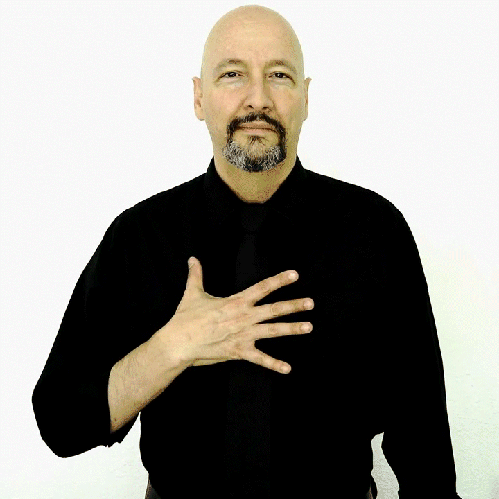
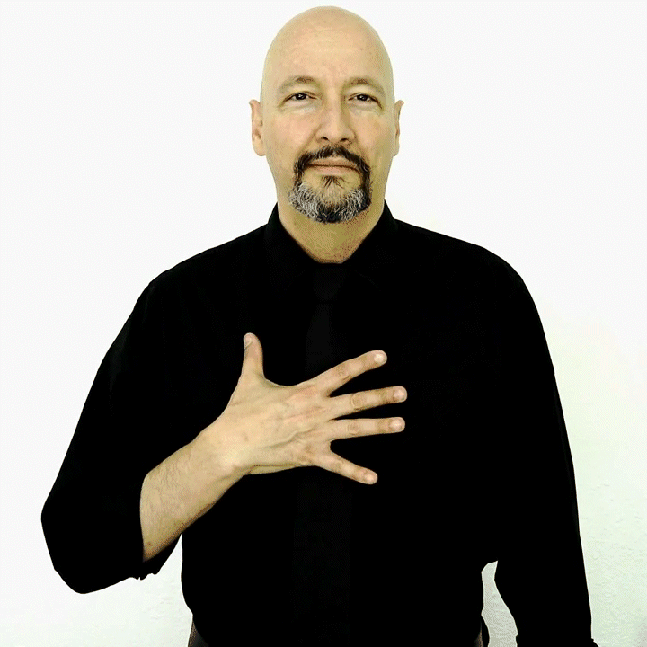
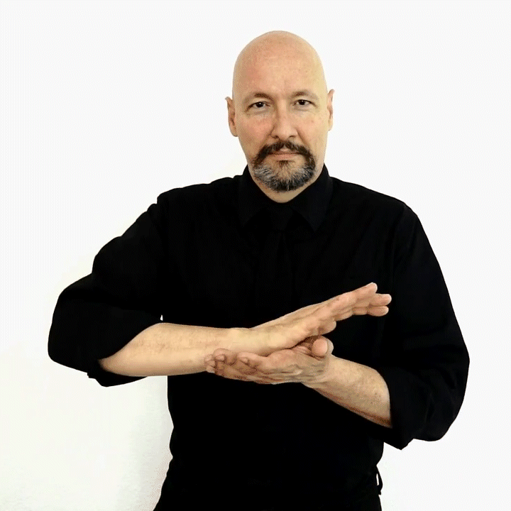
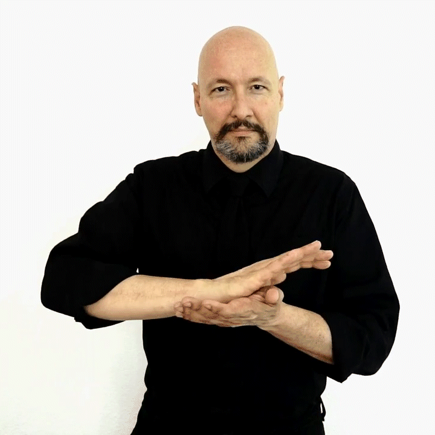
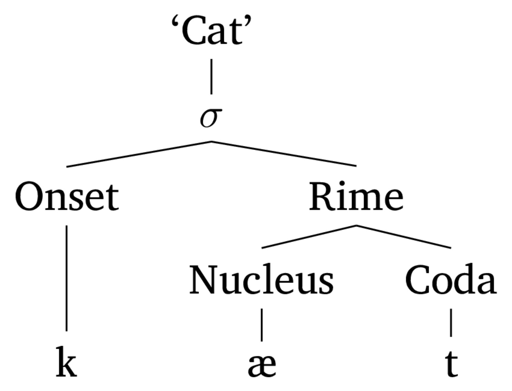
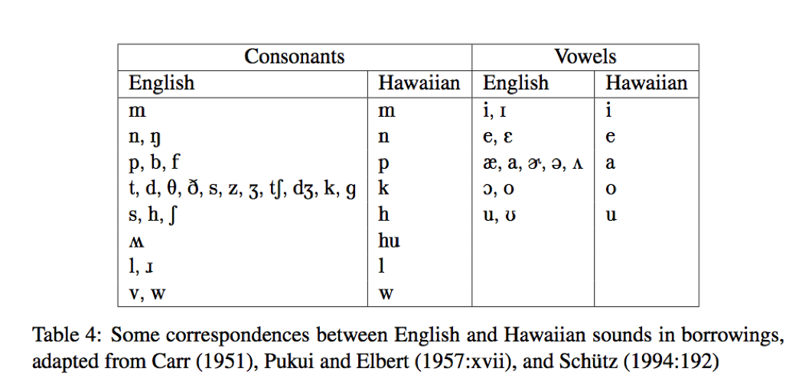

Signed language Phonology
Syllables are fun
Phonotactics
Phonology Q/A
Language Background
Handshape
Orientation
Movement
Location
Expression
They act just like phonetic features (e.g. velar, voiced, stop, fricative)
Assimilation/Dissimilation/Epenthesis/Deletion of gestures
Similar approaches to rule-writing can describe the process
The exact same principles and approaches apply
Minimal pairs are also a thing!
ASL GIFs courtesy of Dr. Bill Vicars at http://www.lifeprint.com
 

 

Parameters in sign are often Simultaneous
Signed language involves many simultaneous parameters affecting one another
This leads to interesting dimensionality in interactions
English is among them.
English speakers have an intuitive sense of syllables
Under
Decoagulate
Antipenultimate

English /l/ becomes [ɫ] in the coda position
/ɛ/ is illegal in words without a coda in English
Spanish will often re-syllabify words to turn codas into onsets
So, they’re good to think about!
/st/
/a/
/ɹ/
/aɹ/
/taɹ/
/st/
/a/
/aɹ/
/taɹ/
We’ve been ignoring this all quarter
But there’s more to /t/ than [t]
| wʌt |
skɪn |
|---|---|
| tʰaɹ |
spun |
|
pʰat |
spat |
|
ɹɛntʰɪŋ |
ɹɪstaɹt |
| kʰjubə | pʰakʰɪt |
|
staɹ |
spɪnstə˞ |
… not just in the onset!
So are /p/ and /k/
Those sounds share a feature!
They’re a natural class
The study of what sounds and combinations of sounds are ‘legal’ in a language
This is called a language’s Phonemic Inventory
Every language has one.
It tells you which phonemes are legal to use
It tells you what the ‘options’ are when there are alternations
It will play a big role in your analysis
It really complicates word borrowings!
Video is from OiwiTV’s ʻĀhaʻi ʻŌlelo Ola: ʻŌlelo Hawaiʻi: A Brief History

Some sounds can’t happen at the start or end of words
Some sound combinations can’t happen
Some syllable structures are favored or prevented
End a word with a pronounced /h/ (“Bah”)
Say the /ŋ/ in “ring” at the start of a word. (“Ngöndro”)
End a word with the vowel in “bet” or “book”. (“Saké”)
English has “s”, “k”, “v”, but say “Moskva”
… and these come into play when we’re borrowing words
Languages adapt words to fit their phonotactic constraints when borrowing.

‘Merry Christmas’ - merii kurisumasu
‘Sixths’ [sɪksθs]
‘Strengths’ [stɹɛŋkθs]
‘Glance’ - взгляд (/vzglʲat/)
‘Of Construction’ - строительств (/strʌˈʲitʲɛlʲstf/)
Strč prst skrz krk - ‘Stick your finger down your throat’
‘Able’ [ejbl̩]
‘Fun and games’ [fʌn n̩ gejmz]

Phonology, phoneme, allophone, complimentary Distribution, Contrastive Distribution, Phonological rule, Natural Class, Minimal Pair, Insertion/Epenthesis, Deletion, Phonotactic Constraint, Syllable, Onset, Coda, Nucleus, Rhyme/Rime

L1 is a ‘native’ language which you’ve learned well, generally as a child or young adult
L2 is an ‘acquired’ language which you didn’t grow up speaking, but have acquired later on
‘Heritage Speakers’ have learned a language informally through exposure at home or from relatives, but may never have learned in school or spoken extensively outside the home
What exactly is a ‘native speaker’ of a language?
Where does this leave bilinguals?
What about people who learned English as L2, but have used it more than their L1 in their lifetimes?
What about heritage speakers?
Which language(s) did you learn first?
Which language(s) do you use most often?
Which language(s) do you feel conversationally fluent in?
Which language(s) do you have grammatical intuitions in?
Which language(s) would you prefer to use in a given context?
Which language(s) do you identify with, or feel an allegiance towards?
Every person has a rich language background
This is important to consider as we do linguistic work
… and trying to compact it down to one dimension or ‘term’ isn’t a great plan!